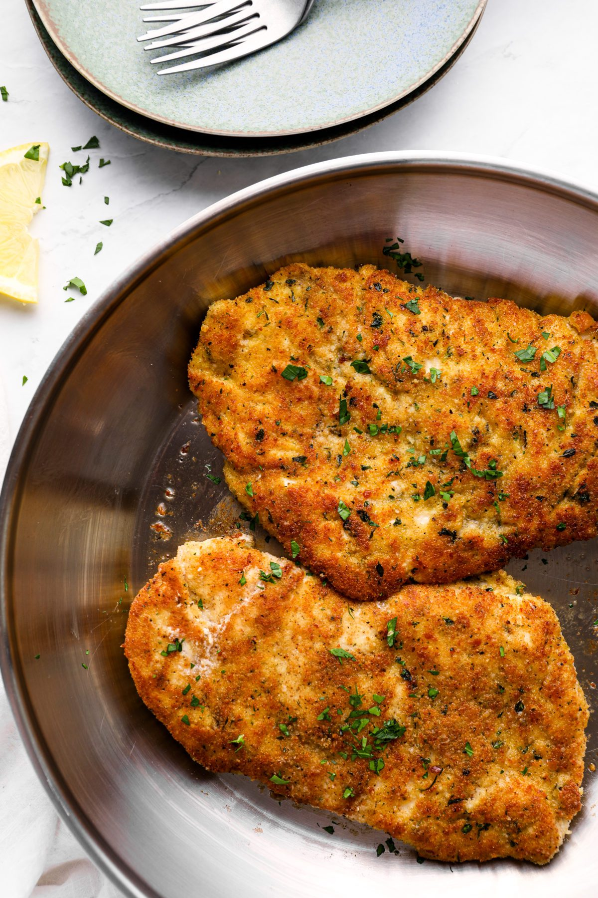

Garlic Parmesan Crusted Chicken

| Prep Time: |
15 min |
| Total Time: |
50 min |
Description
Here it is, the main course! Being that we don't eat red meat, and it's way too soon to be making
another turkey, we decided to try something new with this Parmesan Crusted Chicken Breast.
Parmesan and garlic is a classic combination and the flavor of this chicken fit perfectly with the
rest of the dishes.
Ingredients
- 2 chicken breasts, cut in half
- 2% milk
- Bread Crumbs
- Minced garlic
- Grated parmesan cheese
- 1 Lemon
- Olive oil
Instructions
- Preheat oven to 350°F. Fill one bowl with milk and one with bread crumbs
- Dip chicken first in milk, followed by bread crumbs making sure to coat evenly
- Coat bottom of a casserole dish with olive oil and place in the chicken, evenly spaced
- Top each piece with parmesan, garlic, and lemon juice
- Bake for 30 minutes or until the chicken reach an internal temperature of 165°F. Flip chicken
halfway through to help stay crispy.
- Let rest for 5 min.
- Enjoy!
Home
Top of Page